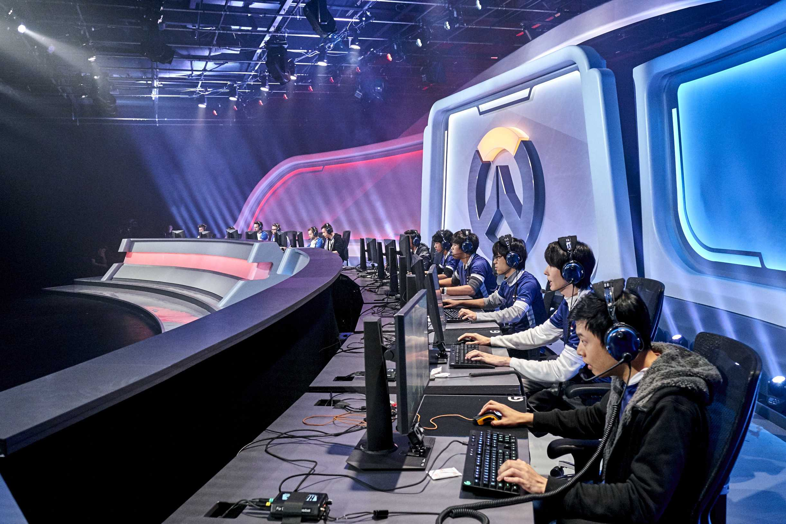
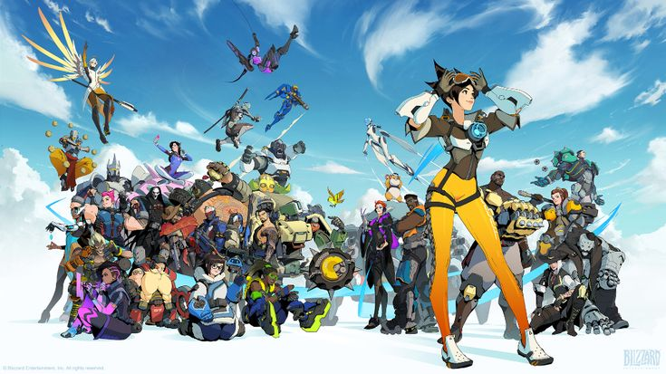
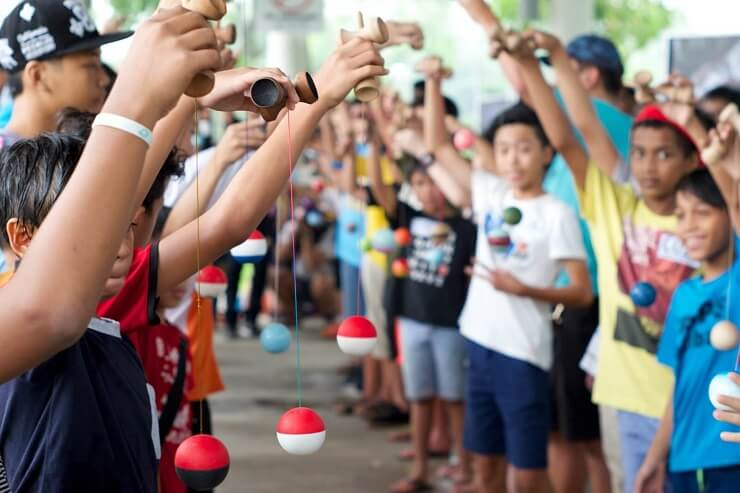
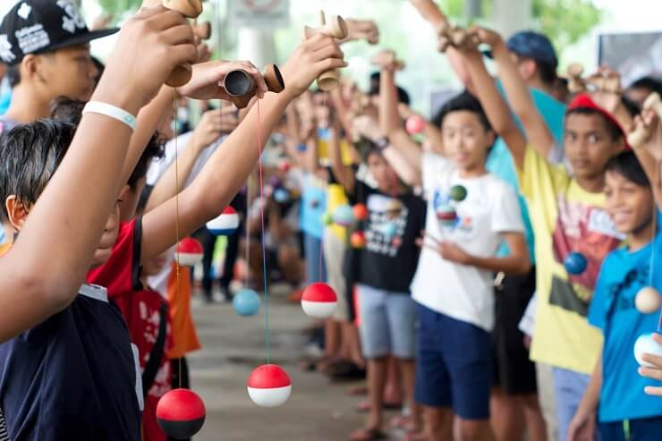

Formation 
Nous proposons différentes formations dans notre très grande école JAY WON qui est première au classement des Cevennes
Voici nos 3 formations les plus prisées à JAY WON
La Formation GCCPP (Game Candy Crush Professional Play)


Formation Candy Crush : Maîtrisez le Jeu à 100% :
Plongez-vous dans l'univers coloré et captivant de Candy Crush avec notre formation exclusive conçue pour les passionnés de ce jeu iconique ! Êtes-vous prêts à franchir des niveaux, à aligner des bonbons et à relever des défis exaltants ?
Objectif de la Formation :
Cette formation interactive est spécialement conçue pour vous aider à comprendre les stratégies clés, les astuces avancées et les techniques indispensables pour progresser rapidement dans Candy Crush. Que vous soyez un joueur débutant cherchant à améliorer ses compétences ou un adepte passionné souhaitant atteindre des niveaux supérieurs, cette formation est adaptée à tous les niveaux.
Contenu du Programme :
- Les Fondamentaux du Jeu : Découvrez les bases du jeu, comprenez les différents types de bonbons et apprenez comment réaliser des combinaisons pour maximiser vos points.
- Stratégies Avancées : Maîtrisez les techniques avancées telles que les combos spéciaux, les boosters et les bonus pour franchir les niveaux les plus difficiles.
- Gestion des Ressources : Apprenez à gérer vos vies, vos boosters et vos mouvements avec efficacité pour optimiser votre progression dans le jeu.
- Conseils d'Experts : Bénéficiez des conseils d'experts et des astuces des meilleurs joueurs pour exceller dans Candy Crush.
Modalités de la Formation :
Cette formation se déroule sur une plateforme en ligne conviviale, vous permettant d'accéder aux cours à votre rythme. Des modules interactifs, des quiz et des exercices pratiques sont inclus pour renforcer votre apprentissage.
Pourquoi Choisir Notre Formation ?
- Encadrée par des experts passionnés de Candy Crush.
- Des stratégies testées et éprouvées pour progresser rapidement.
- Un accès flexible pour apprendre à tout moment, n'importe où.
- Des conseils personnalisés pour répondre à vos besoins spécifiques.
Préparez-vous à devenir un maître du jeu en vous inscrivant dès maintenant à notre formation Candy Crush. Relevez le défi et montrez votre habileté dans l'art de combiner les bonbons !
La formation PEDO (Professionnal Entertainment Degree Overwatch)
Objectif de la Formation :
Cette formation doctorale approfondie a pour objectif de développer une expertise exceptionnelle en matière de stratégie, de communication et de jeu d'équipe dans Overwatch. Les participants mèneront des recherches approfondies sur les mécaniques du jeu, la psychologie de l'équipe et la méta, tout en travaillant sur des projets novateurs pour contribuer à l'avancement de la compréhension stratégique d'Overwatch.
Modules de Formation :
- Fondements de l'Overwatch Stratégique :
- Analyse approfondie des mécaniques de jeu et des interactions entre héros.
- Étude des tendances historiques de la méta.
- Recherche en Composition d'Équipe et en Stratégie de Carte :
- Conception et exécution de projets de recherche sur les compositions d'équipe les plus efficaces.
- Analyse statistique des avantages et des inconvénients des stratégies de carte.
- Communication Avancée et Psychologie de l'Équipe :
- Approfondissement des compétences de communication avancée pour des équipes compétitives.
- Étude de la psychologie de l'équipe et des dynamiques de groupe en jeu.
- Innovation Stratégique et Développement de Nouvelles Tactiques :
- Encouragement de la pensée créative pour le développement de nouvelles tactiques.
- Collaboration sur des projets de recherche visant à repousser les limites stratégiques actuelles.
- Leadership et Gestion d'Équipe :
- Développement des compétences de leadership pour diriger des équipes compétitives.
- Étude de cas sur le leadership réussi dans le domaine de l'esport.
- Analyse Statistique Avancée et Modélisation de la Méta :
- Utilisation de techniques statistiques avancées pour modéliser les tendances de la méta.
- Apprentissage des outils de modélisation pour prédire les changements de méta.
- Analyse Statistique Avancée et Modélisation de la Méta :
- Utilisation de techniques statistiques avancées pour modéliser les tendances de la méta.
- Apprentissage des outils de modélisation pour prédire les changements de méta.
- Éthique et Intégrité dans le Jeu Compétitif :
- Discussion sur les enjeux éthiques liés à la compétition dans le jeu vidéo.
- Développement de codes de conduite pour promouvoir l'intégrité dans les compétitions.
- Thèse de Doctorat et Soutenance :
- Rédaction d'une thèse originale basée sur la recherche menée pendant la formation.
- Soutenance devant un jury d'experts de l'industrie du jeu et des sports électroniques.
Durée de la Formation :
La formation doctorale s'étend sur une période de trois à cinq ans, avec des cours, des séminaires, des projets de recherche, et la rédaction de la thèse constituant les principaux composants du programme.
Public Cible :
Cette formation s'adresse aux joueurs d'Overwatch passionnés, prêts à consacrer plusieurs années à une étude approfondie du jeu, en vue de devenir des experts reconnus dans le domaine stratégique de l'esport.
La formation FTG (Formation To Grow)
 

Module 1 : Fondamentaux du Bilboquet
- Apprenez l'histoire fascinante du bilboquet, remontant à des siècles.
- Techniques de fabrication artisanale de bilboquets traditionnels.
- Développement de compétences de coordination œil-main à travers des exercices pratiques.
- Analyse des variantes culturelles du bilboquet à travers le monde.
Module 2 : Stratégies Avancées au Bilboquet
- Exploration des tactiques avancées pour maîtriser le bilboquet.
- Séances de pratique intensive pour perfectionner la précision et la constance.
- Développement d'une routine de bilboquet artistique pour l'expression personnelle.
Module 3 : Pong et l'Évolution des Jeux Vidéo
- Retracez l'histoire du légendaire Pong et son impact sur l'industrie du jeu vidéo.
- Introduction à la programmation de base pour comprendre les principes fondamentaux derrière les jeux vidéo.
- Création de versions personnalisées de Pong pour acquérir des compétences pratiques.
Module 4 : Tournoi de Bilboquet et Pong
- Participation à des tournois amicaux de bilboquet et de Pong.
- Rencontrez d'autres passionnés et échangez des stratégies.
- Célébration des compétences acquises lors d'une soirée de clôture animée.
Module 5 : Projet Final - Fusion Créative
- Les participants uniront le bilboquet et Pong dans un projet créatif unique.
- RConception et fabrication d'un bilboquet électronique connecté à un jeu de Pong.
- Présentation des projets lors d'un événement de clôture ouvert au public.
Pourquoi choisir "FTG"?
- Les amateurs de jeux traditionnels cherchant à maîtriser le bilboquet.
- Les passionnés de jeux vidéo intéressés par l'histoire de Pong.
- Les étudiants en informatique et design cherchant à allier tradition et technologie.